1/ Stockos
Jeremy Nitel, web responsible, is sending us some instructions through the "/chat" web page.
 He finds a web platform where different dangerous products were ordered and asks us to find the customer email. By finding that emai, we will know who order those dangerous products. The link of the web platform is “/4e9033c6eacf38dc2a5df7a14526bec1”. “/” gives us the indication of a URL directory, so let’s try to append it to the CTF URL https://challengecybersec.fr/4e9033c6eacf38dc2a5df7a14526bec1.
He finds a web platform where different dangerous products were ordered and asks us to find the customer email. By finding that emai, we will know who order those dangerous products. The link of the web platform is “/4e9033c6eacf38dc2a5df7a14526bec1”. “/” gives us the indication of a URL directory, so let’s try to append it to the CTF URL https://challengecybersec.fr/4e9033c6eacf38dc2a5df7a14526bec1.
Reaching the URL, we are facing a login page.
 Jeremy Nitel informs us that Stockos user’s password were leaked and some were using very simple password. After a few attempts, the combination admin/admin works. You could also use hydra to brute force the login page using a file gathering the most used username and password.
Jeremy Nitel informs us that Stockos user’s password were leaked and some were using very simple password. After a few attempts, the combination admin/admin works. You could also use hydra to brute force the login page using a file gathering the most used username and password.
On the next page, we reach a page with some clickable element on the left panel. Clicking on the 2nd element, we can search for some objects in the inventory of the company. Searching some objects means requesting the database. Does it sound like injection SQL ?
Using a very simple SQL injection, we see that the website is vulnerable. When I search with “sqlinjection‘ OR ‘a’ = ‘a’ #”, we managed to get some results.
 Moreover, looking at what the customer "Evil Gouv" purchases tell us that this customer has ordered some dangerous products. We must find that customer email.
Moreover, looking at what the customer "Evil Gouv" purchases tell us that this customer has ordered some dangerous products. We must find that customer email.
Let's do some advanced SQL injection:
“sqlinjection’ OR ‘a’=’a’ ORDER BY email DESC # does not give any error, so the email field should exist in the table of the database. We need to find the different tables name of that database. “sqlinjection”' OR 'a'='a' UNION SELECT 1,1,1,1, table_name from information_schema.tables #" can retrieve all the tables of the database.
 The table "customer" seems very interesting to dig into. We can print all the elements from that table with this query "' OR 'a'='a' UNION SELECT * from customer #" and see what it returns.
But it would be better to know what are the columns of the customer table. Let's see if we can retrieve all the columns of all the tables with this query "' or 'a'='a' UNION SELECT 1,1,1,table_name, column_name from information_schema.columns #"
The table "customer" seems very interesting to dig into. We can print all the elements from that table with this query "' OR 'a'='a' UNION SELECT * from customer #" and see what it returns.
But it would be better to know what are the columns of the customer table. Let's see if we can retrieve all the columns of all the tables with this query "' or 'a'='a' UNION SELECT 1,1,1,table_name, column_name from information_schema.columns #"
 It works! the "customer" table has 5 columns: delivery address, email, id, name, signup_date
It works! the "customer" table has 5 columns: delivery address, email, id, name, signup_date
Since we have all the columns of the customer table, we can make a accurate query by adding a condition where name is equal to Evil Gouv. The SQL query would be "' OR 'a'='a' UNION SELECT * from customer where name="Evil Gouv"#"
We got the email! agent.malice@secret.evil.gov.ev
Let's reply back to Jeremy Nitel with that email address.
2/ Air Evil
Once we have given the right email address to Jeremy, he asks us to book a plane on the website "AirEvil". To reach the page, Jeremy Nitel, gave us another website. We must book the flight ABDJI6 on the date 26/10/2020 to 28/10/2020 from Bad City to Evil City. The airline company website is: /35e334a1ef338faf064da9eb5f861d3c.
 Let’s append it to the CTF URL: https://challengecybersec.fr/35e334a1ef338faf064da9eb5f861d3c
Let’s append it to the CTF URL: https://challengecybersec.fr/35e334a1ef338faf064da9eb5f861d3c
Reaching the page, we are facing a classic airline website, in the middle, there are the information to fill in order to book plane.
 Let's try to book the plane by adding the flight information given by Jeremy Nitel. It redirects us to a login webpage, the login is composed of two field (email address and password), we probably need to find the password of agent.malice@secret.evil.gov.ev. Clicking on "Password forgotten", we can check if the user exists or not in the database.
Let's try to book the plane by adding the flight information given by Jeremy Nitel. It redirects us to a login webpage, the login is composed of two field (email address and password), we probably need to find the password of agent.malice@secret.evil.gov.ev. Clicking on "Password forgotten", we can check if the user exists or not in the database.
 We don't get the error when we've put the email address "agent.malice@secret.evil.gov.ev".
Let's create an account and see what we can do after being logged. I've created an account, tried to book the ticket by entering the information given by Jeremy. However, it tells me that I don't have the right to book a flight. So I guess, we must find out how to get the password from the email agent.malice@secret.evil.gov.ev.
We don't get the error when we've put the email address "agent.malice@secret.evil.gov.ev".
Let's create an account and see what we can do after being logged. I've created an account, tried to book the ticket by entering the information given by Jeremy. However, it tells me that I don't have the right to book a flight. So I guess, we must find out how to get the password from the email agent.malice@secret.evil.gov.ev.
Let’s reset our password. To find out what kind of email, and link will be used when an account wants to reset their password.
 I've received an email to my email address and tell to view my password. The link is "https://challengecybersec.fr/35e334a1ef338faf064da9eb5f861d3c/reset/YW50aG9ueS5lbHlhaHVkQGdtYWlsLmNvbQ==".
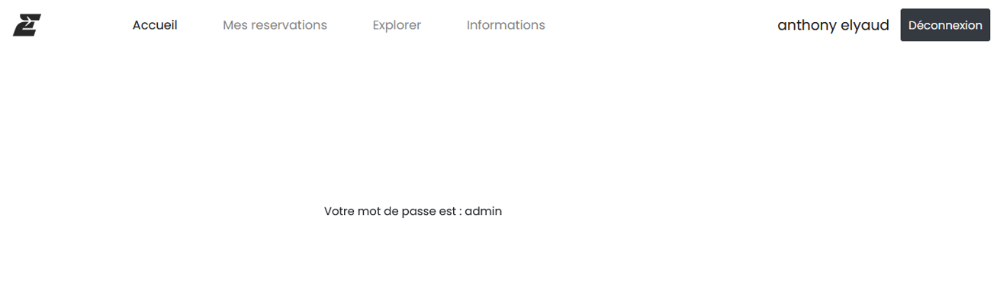
They are really printing the password ! Looking at the url, YW50aG9ueS5lbHlhaHVkQGdtYWlsLmNvbQ== seems to be encoded in base64, we should decode the base64 to see what's the decoded information.
To decode b64, many tools on internet can be used, such as CyberChef, otherwise you can use Linux and type "base64 -d [encoded_message]"
So the base64 is actually our email address! Good to know, because now, it's really easy. We are going to put the email agent.malice@secret.evil.gov.ev on the forgotten password and then encode agent.malice@secret.evil.gov.ev in base64, which give us "YWdlbnQubWFsaWNlQHNlY3JldC5ldmlsLmdvdi5ldg=="
Then let's open the url https://challengecybersec.fr/35e334a1ef338faf064da9eb5f861d3c/reset/YWdlbnQubWFsaWNlQHNlY3JldC5ldmlsLmdvdi5ldg==
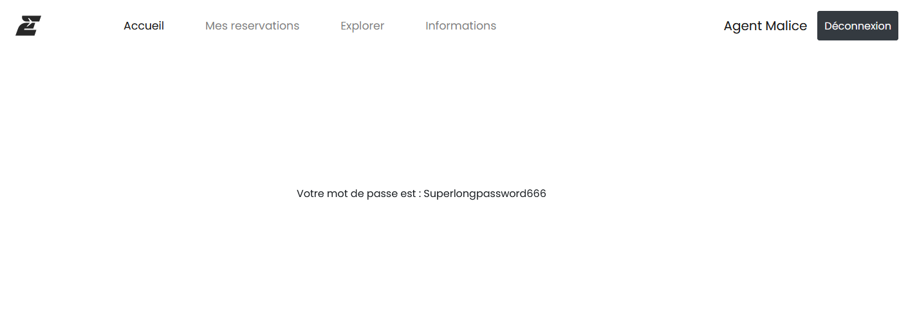
We get the password ! We can book the flight now.
Once connected, I’ve tried to book a flight, but it said the flight is already booked. So, I checked which flight it is booked by clicking on “Mes reservations”.
I've received an email to my email address and tell to view my password. The link is "https://challengecybersec.fr/35e334a1ef338faf064da9eb5f861d3c/reset/YW50aG9ueS5lbHlhaHVkQGdtYWlsLmNvbQ==".
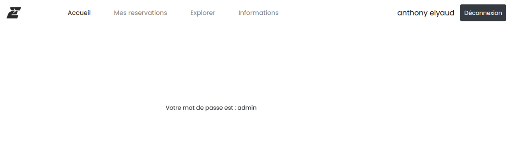
They are really printing the password ! Looking at the url, YW50aG9ueS5lbHlhaHVkQGdtYWlsLmNvbQ== seems to be encoded in base64, we should decode the base64 to see what's the decoded information.
To decode b64, many tools on internet can be used, such as CyberChef, otherwise you can use Linux and type "base64 -d [encoded_message]"
So the base64 is actually our email address! Good to know, because now, it's really easy. We are going to put the email agent.malice@secret.evil.gov.ev on the forgotten password and then encode agent.malice@secret.evil.gov.ev in base64, which give us "YWdlbnQubWFsaWNlQHNlY3JldC5ldmlsLmdvdi5ldg=="
Then let's open the url https://challengecybersec.fr/35e334a1ef338faf064da9eb5f861d3c/reset/YWdlbnQubWFsaWNlQHNlY3JldC5ldmlsLmdvdi5ldg==
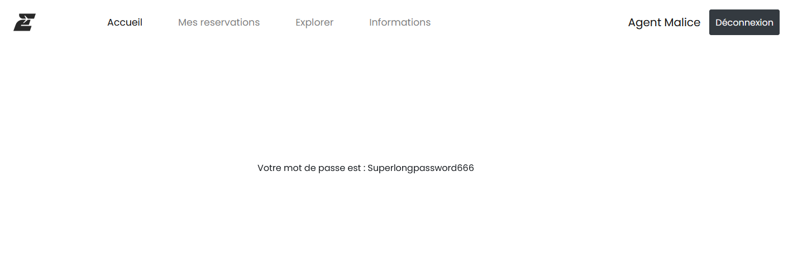
We get the password ! We can book the flight now.
Once connected, I’ve tried to book a flight, but it said the flight is already booked. So, I checked which flight it is booked by clicking on “Mes reservations”.
 After scanning the QRcode, we get the first flag !
DGSESIEE{2cd992f9b2319860ce3a35db6673a9b8}
After scanning the QRcode, we get the first flag !
DGSESIEE{2cd992f9b2319860ce3a35db6673a9b8}
3/ Capture
Jeremy Nitel has a last exercise for us, he managed to intercept a communication from the Evil Group but it is encrypted. Jeremy sent us an .pcap file called "Caputre" and inside of that file, we have the encrypted communication. The goal of this challenge is to find a way to decrypt it.
To analyze a .pcap file, we can use Wireshark.
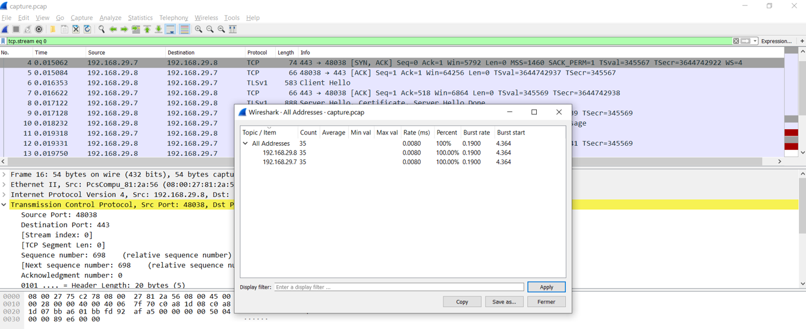
There are only two ip addresses 192.168.29.8 and 192.168.29.7
As expected since it is an encrypted message, most of the protocols are TCP and SSL.
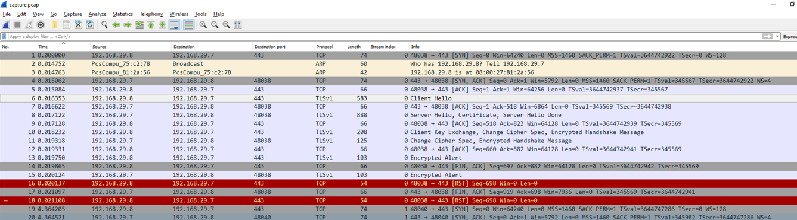
Let’s dig deeper on the Cipher suite used by the protocol. In the Client Hello request, we can see what kind of cipher suite it offers.
As you can see on the screenshot above, we have 6 cipher suites that I can be used to encrypt any message using this protocol. Checking the Server Hello packet, we see that the server use TLS_RSA_WITH_AES_128_CBC_SHA (0x002f) to encrypt the message.
TLS = protocol version
RSA = Key exchange axlorithm determining the peer authentication
AES_128_CBC = bulk encryption axlorithm used for data encryption
SHA = Message Authentication Code which is a cryptographic hash
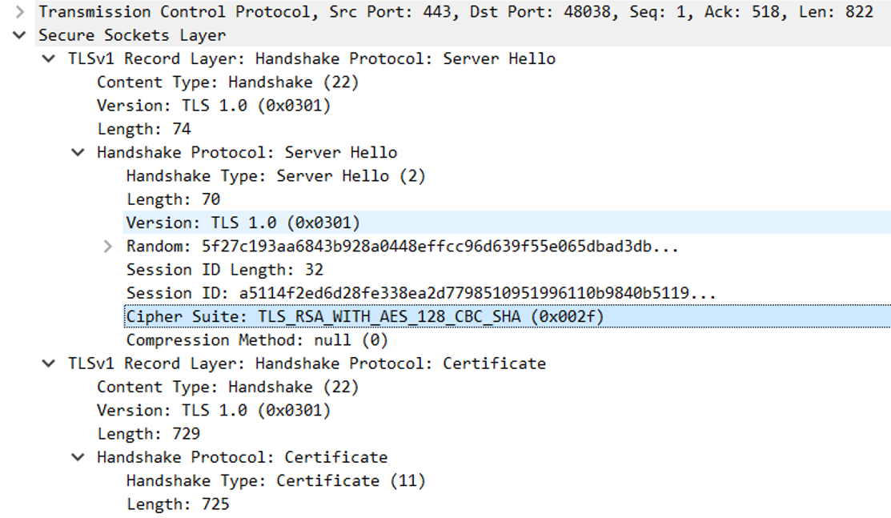
The server uses an old version of TLS (TLS 1.0) which is vulnerable and not a recommended version.
TLS_RSA_WITH_AES_128_CBC_SHA use symmetric keys, which means that the data are encrypted and decrypted with the same key. Therefore, if we find the encryption key, we might decrypt the encrypted message.
To find the public key, we can extract the certificate which is made with the public key.
TLSv1 record Layer: Change Cipher Spec Protocol: Change Cipher Spec notifies the server that all the future messages will be encrypted using the axlorithm and keys that were just negotiated.
So future message will be encrypted using TLS 1.0 and TLS_RSA_WITH_AES_128_CBC_SHA axlorithm.
Let's check the encryption method of the certificate. To do that, we will export the certificate and use “openssl” to get the information of the certificate.
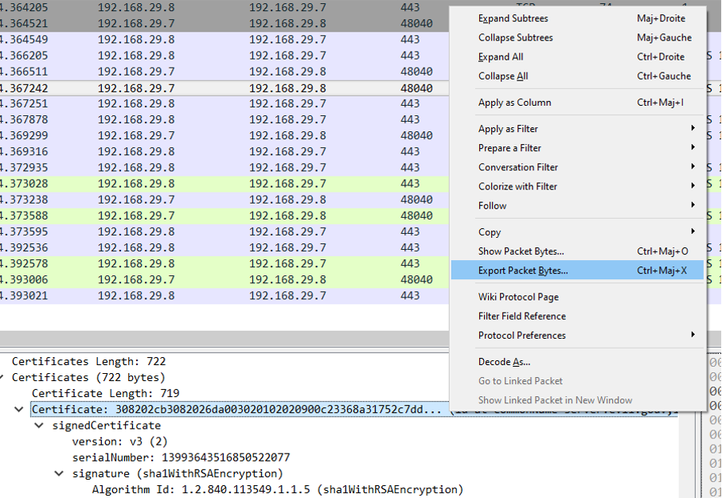
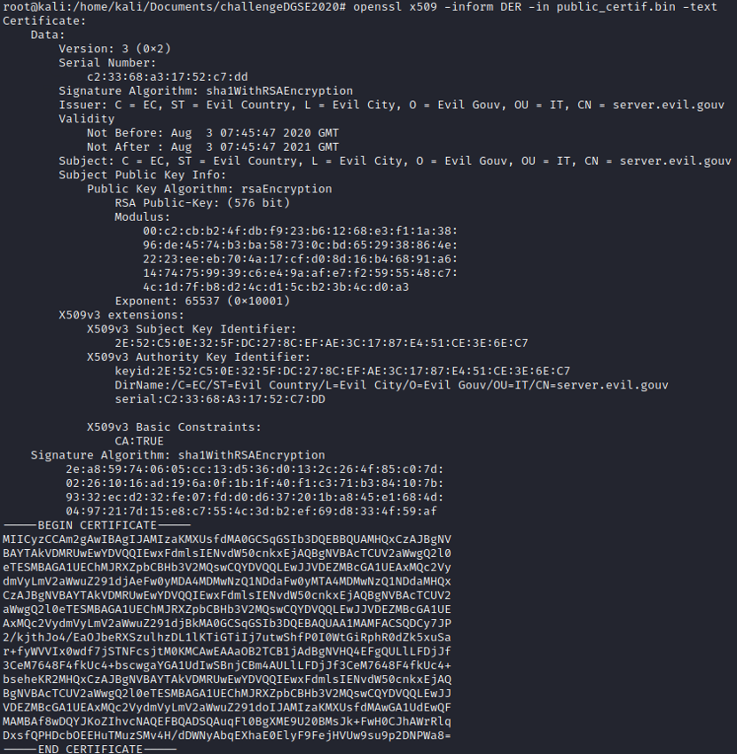
The encryption used for the certificate is the RSA 576 bits. It is currently not recommended to use RSA encryption below 2048 bits.
2 prime numbers are found to crack the RSA-576
The publicExponent is equal to 65537. E = 65537
We have p, q, n and e. It misses d to create the RSA private key. We can use WolframAlpha to calculate it.
d * e == 1 modulo (p-1)(q-1) <=> d = e.modInverse((p-1)(q-1))
When we have all the number, we will create a file called "rsaconf.txt" and put all the numbers we have calculated.
asn1=SEQUENCE:rsa_key
[rsa_key]
version Version,
modulus INTEGER, -- n
publicExponent INTEGER, -- e
privateExponent INTEGER, -- d
prime1 INTEGER, -- p
prime2 INTEGER, -- q
exponent1 INTEGER, -- d mod (p-1)
exponent2 INTEGER, -- d mod (q-1)
coefficient INTEGER, -- (inverse of q) mod p
Once we had entered all the values, run the command : openssl asn1parse -genconf rsaconf.txt -out mykey.der
Then to find our private key on this .der file, run the command:
openssl rsa -in mykey.der -inform der -text -check
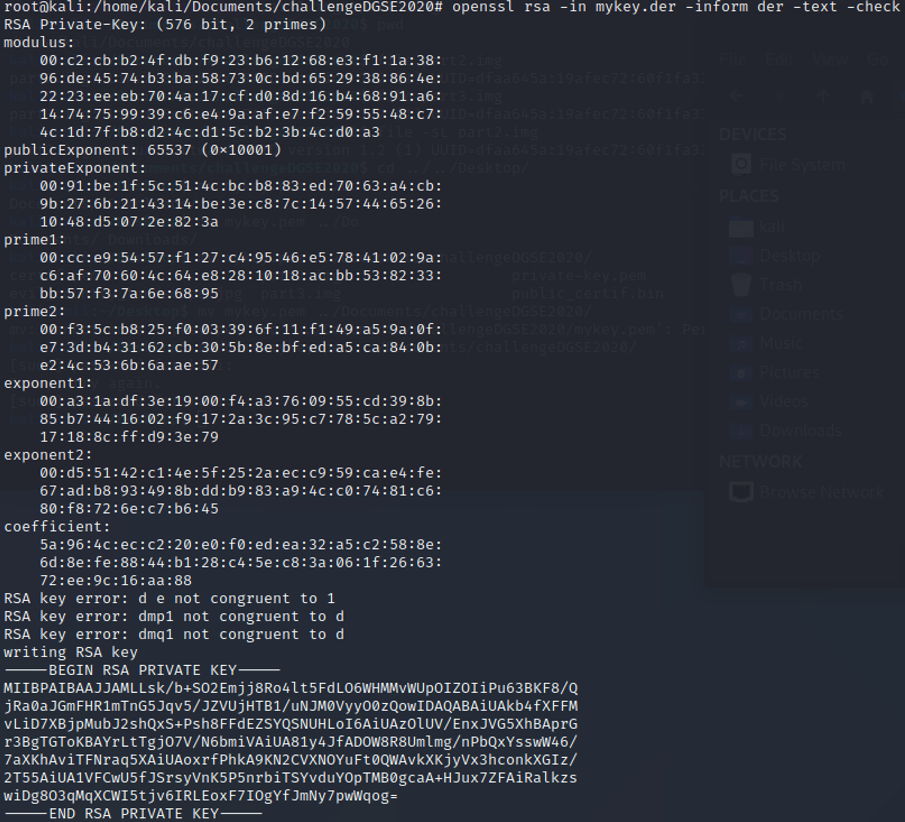
Copy the private key and paste it in a new file, called mykey.pem
On wireshark, go to Edit > Preference > Protocol > SSL > RSA keys list and put the private key to decrypt the message encrypted by TLS.
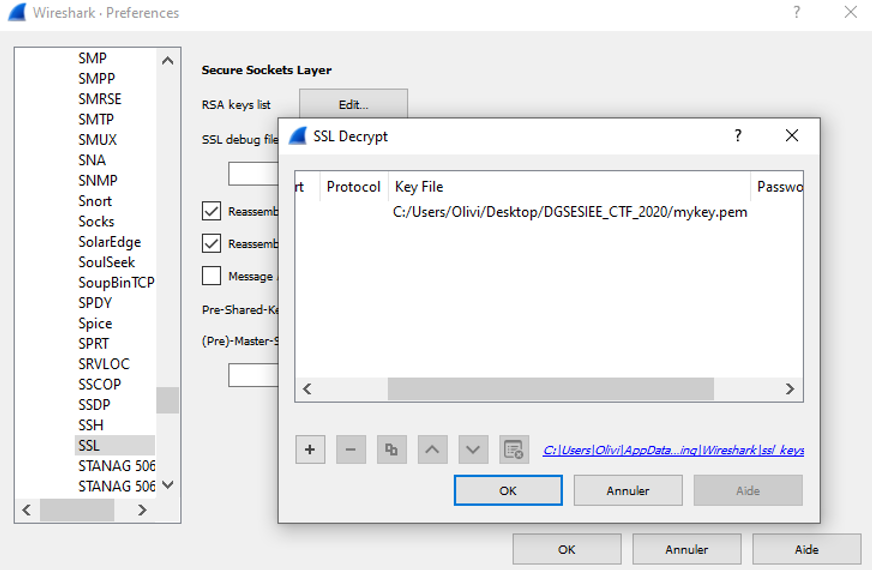
Once the rsa private key is in Wireshark, it decrypts the message
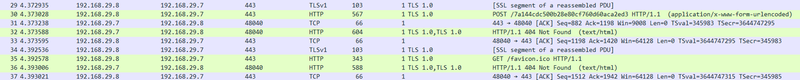
And we just have to follow the SSL stream
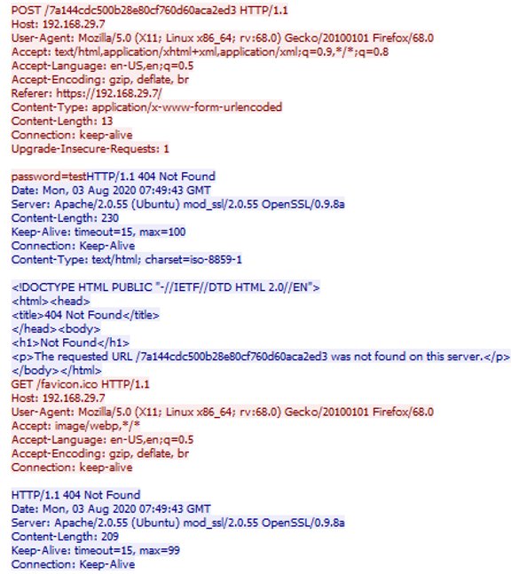
We have: /7a144cdc500b28e80cf760d60aca2ed3 and password = test
Let's see what we can find by appending it to the challenge URL:
https://challengecybersec.fr/7a144cdc500b28e80cf760d60aca2ed3
It redirects us to the login page of the challenge. So all of that, was to have access to the challenge, and there are differents challenges.
All of that was to access to the real challenge page.